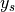

Semi-analytical models for Stiffeners (compmech.stiffener)¶
This module has all stiffener’s formulations used along other classes.
-
class
compmech.stiffener.BladeStiff1D(bay, mu, panel1, panel2, ys, bb, bf, bstack, bplyts, blaminaprops, fstack, fplyts, flaminaprops)[source]¶ Blade Stiffener using 1D Formulation for Flange
Blade-type of stiffener model using a 1D formulation for the flange and a 2D formulation for the padup (base):
|| --> flange | || |-> stiffener ====== --> padup | ========================= --> panels Panel1 Panel2
Both the flange and the padup are optional, but one must exist.
Each stiffener has a constant
 coordinate.
coordinate.Methods
calc_k0(self[, size, row0, col0, silent, …])Calculate the linear constitutive stiffness matrix
calc_kG0(self[, size, row0, col0, silent, …])Calculate the linear geometric stiffness matrix
calc_kM(self[, size, row0, col0, silent, …])Calculate the mass matrix
-
calc_k0(self, size=None, row0=0, col0=0, silent=False, finalize=True)[source]¶ Calculate the linear constitutive stiffness matrix
-
-
class
compmech.stiffener.BladeStiff2D(bay, mu, panel1, panel2, ys, bb, bf, bstack, bplyts, blaminaprops, fstack, fplyts, flaminaprops, mf=14, nf=11)[source]¶ Blade Stiffener using 2D Formulation for Flange
Blade-type of stiffener model using a 2D formulation for the flange and a 2D formulation for the base (padup):
|| --> flange | || |-> stiffener ====== --> padup | ========================= --> panels Panel1 Panel2
Both the flange and the base are optional. The stiffener’s base is modeled using the same approximation functions as the skin, with the proper offset.
Each stiffener has a constant  coordinate.
Methods
calc_k0(self[, size, row0, col0, silent, …])Calculate the linear constitutive stiffness matrix
calc_kG0(self[, size, row0, col0, silent, …])Calculate the linear geometric stiffness matrix
calc_kM(self[, size, row0, col0, silent, …])Calculate the mass matrix
-
calc_k0(self, size=None, row0=0, col0=0, silent=False, finalize=True)[source]¶ Calculate the linear constitutive stiffness matrix
-
-
class
compmech.stiffener.TStiff2D(bay, mu, panel1, panel2, ys, bb, bf, bstack, bplyts, blaminaprops, fstack, fplyts, flaminaprops, model='tstiff2d_clt_donnell_bardell', mb=15, nb=12, mf=15, nf=12)[source]¶ T Stiffener using 2D Formulation for the Base and Flange
T-type of stiffener model using a 2D formulation for the flange and a 2D formulation for the base:
|| --> flange | || |-> stiffener ====== --> base | ========================= --> panels Panel1 Panel2
The difference between this model and :class:’.BladeStiff2D’ is that here the stiffener’s base has independent field variables allowing the simulation of skin-stiffener debounding effects.
Each stiffener has a constant coordinate.
Methods
calc_k0(self[, size, row0, col0, silent, …])Calculate the linear constitutive stiffness matrix
calc_kG0(self[, size, row0, col0, silent, …])Calculate the linear geometric stiffness matrix
calc_kM(self[, size, row0, col0, silent, …])Calculate the mass matrix
-
calc_k0(self, size=None, row0=0, col0=0, silent=False, finalize=True)[source]¶ Calculate the linear constitutive stiffness matrix
-
calc_kG0(self, size=None, row0=0, col0=0, silent=False, finalize=True, c=None, NLgeom=False)[source]¶ Calculate the linear geometric stiffness matrix
See
Panel.calc_k0()for details on each parameter.
-